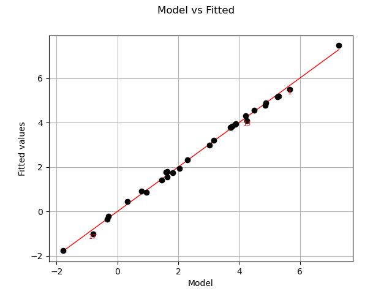
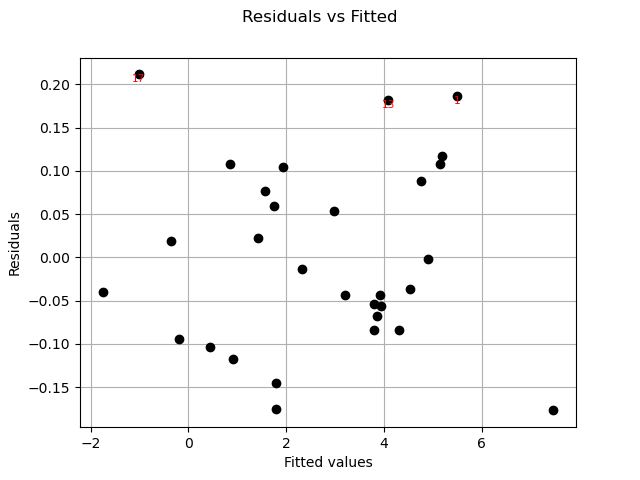

Note
Click here to download the full example code
Create a linear model¶
In this example we are going to create a global approximation of a model response using linear model approximation.
Here .
from __future__ import print_function
import openturns as ot
try:
get_ipython()
except NameError:
import matplotlib
matplotlib.use('Agg')
from openturns.viewer import View
import numpy as np
import matplotlib.pyplot as plt
import openturns.viewer as viewer
from matplotlib import pylab as plt
ot.Log.Show(ot.Log.NONE)
Hereafter we generate data using the previous model. We also add a noise:
ot.RandomGenerator.SetSeed(0)
distribution = ot.Normal(2)
distribution.setDescription(["x","y"])
func = ot.SymbolicFunction(['x', 'y'], ['2 * x - y + 3 + 0.05 * sin(0.8*x)'])
input_sample = distribution.getSample(30)
epsilon = ot.Normal(0, 0.1).getSample(30)
output_sample = func(input_sample) + epsilon
Let us run the linear model algorithm using the LinearModelAlgorithm class & get its associated result :
algo = ot.LinearModelAlgorithm(input_sample, output_sample)
result = ot.LinearModelResult(algo.getResult())
We get the result structure. As the underlying model is of type regression, it assumes a noise distribution associated to the residuals. Let us get it:
print(result.getNoiseDistribution())
Out:
Normal(mu = 0, sigma = 0.110481)
We can get also residuals:
print(result.getSampleResiduals())
Out:
[ y0 ]
0 : [ 0.186748 ]
1 : [ -0.117266 ]
2 : [ -0.039708 ]
3 : [ 0.10813 ]
4 : [ -0.0673202 ]
5 : [ -0.145401 ]
6 : [ 0.0184555 ]
7 : [ -0.103225 ]
8 : [ 0.107935 ]
9 : [ 0.0224636 ]
10 : [ -0.0432993 ]
11 : [ 0.0588534 ]
12 : [ 0.181832 ]
13 : [ 0.105051 ]
14 : [ -0.0433805 ]
15 : [ -0.175473 ]
16 : [ 0.211536 ]
17 : [ 0.0877925 ]
18 : [ -0.0367584 ]
19 : [ -0.0537763 ]
20 : [ -0.0838771 ]
21 : [ 0.0530871 ]
22 : [ 0.076703 ]
23 : [ -0.0940915 ]
24 : [ -0.0130962 ]
25 : [ 0.117419 ]
26 : [ -0.00233175 ]
27 : [ -0.0839944 ]
28 : [ -0.176839 ]
29 : [ -0.0561694 ]
We can get also standardized residuals (also called studentized residuals).
print(result.getStandardizedResiduals())
Out:
0 : [ 1.80775 ]
1 : [ -1.10842 ]
2 : [ -0.402104 ]
3 : [ 1.03274 ]
4 : [ -0.633913 ]
5 : [ -1.34349 ]
6 : [ 0.198006 ]
7 : [ -0.980936 ]
8 : [ 1.01668 ]
9 : [ 0.20824 ]
10 : [ -0.400398 ]
11 : [ 0.563104 ]
12 : [ 1.68521 ]
13 : [ 1.02635 ]
14 : [ -0.406336 ]
15 : [ -1.63364 ]
16 : [ 2.07261 ]
17 : [ 0.85374 ]
18 : [ -0.342746 ]
19 : [ -0.498585 ]
20 : [ -0.781474 ]
21 : [ 0.497496 ]
22 : [ 0.759397 ]
23 : [ -0.930217 ]
24 : [ -0.121614 ]
25 : [ 1.11131 ]
26 : [ -0.0227866 ]
27 : [ -0.783004 ]
28 : [ -1.78814 ]
29 : [ -0.520003 ]
Now we got the result, we can perform a postprocessing analysis. We use LinearModelAnalysis for that purpose:
analysis = ot.LinearModelAnalysis(result)
print(analysis)
Out:
Basis( [[x,y]->[1],[x,y]->[x],[x,y]->[y]] )
Coefficients:
| Estimate | Std Error | t value | Pr(>|t|) |
--------------------------------------------------------------------
[x,y]->[1] | 2.99847 | 0.0204173 | 146.859 | 9.82341e-41 |
[x,y]->[x] | 2.02079 | 0.0210897 | 95.8186 | 9.76973e-36 |
[x,y]->[y] | -0.994327 | 0.0215911 | -46.0527 | 3.35854e-27 |
--------------------------------------------------------------------
Residual standard error: 0.11048 on 27 degrees of freedom
F-statistic: 5566.3 , p-value: 0
---------------------------------
Multiple R-squared | 0.997581 |
Adjusted R-squared | 0.997401 |
---------------------------------
---------------------------------
Normality test | p-value |
---------------------------------
Anderson-Darling | 0.456553 |
Cramer-Von Mises | 0.367709 |
Chi-Squared | 0.669183 |
Kolmogorov-Smirnov | 0.578427 |
---------------------------------
It seems that the linear hypothesis could be accepted. Indeed, R-Squared value is nearly 1. Also the adjusted value (taking into account the datasize & number of parameters) is similar to R-Squared.
Also, we notice that both Fisher-Snedecor and Student p-values detailled above are less than 1%. This ensure the quality of the linear model.
Let us compare model and fitted values:
graph = analysis.drawModelVsFitted()
view = viewer.View(graph)

Seems that the linearity hypothesis is accurate.
We complete this analysis using some usefull graphs :
fig = plt.figure(figsize=(12,10))
for k, plot in enumerate(["drawResidualsVsFitted", "drawScaleLocation", "drawQQplot",
"drawCookDistance", "drawResidualsVsLeverages", "drawCookVsLeverages"]):
graph = getattr(analysis, plot)()
ax = fig.add_subplot(3, 2, k + 1)
v = View(graph, figure=fig, axes=[ax])
_ = v.getFigure().suptitle("Diagnostic graphs", fontsize=18)

These graphics help asserting the linear model hypothesis. Indeed :
Quantile-to-quantile plot seems accurate
We notice heteroscedasticity within the noise
It seems that there is no outlier
Finally we give the intervals for each estimated coefficient (95% confidence interval):
alpha = 0.95
interval = analysis.getCoefficientsConfidenceInterval(alpha)
print("confidence intervals with level=%1.2f : %s" % (alpha, interval))
plt.show()
Out:
confidence intervals with level=0.95 : [2.95657, 3.04036]
[1.97751, 2.06406]
[-1.03863, -0.950026]
Total running time of the script: ( 0 minutes 0.786 seconds)